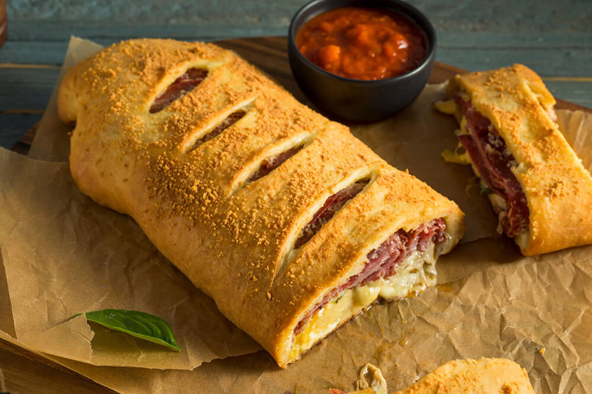

Stromboli

Back to Home
Description
Stromboli is an Italian-American rolled pizza stuffed with savory meats, melted cheeses, and tangy pizza sauce, then baked until golden and crispy on the outside.
Ingredients
Dough
- 1 and 1/3 cups (320ml) warm water (between 100-110°F, 38-43°C)
- 2 and 1/4 teaspoons (7g) instant or active-dry yeast (1 standard packet)
- 1 Tablespoon (13g) granulated sugar
- 2 Tablespoons (30ml) olive oil
- 1 teaspoon salt
- 3 and 1/2 cups (about 450g) all-purpose flour (spooned & leveled), plus more for hands and work surface
Filling
- 3 Tablespoons (43g) unsalted butter, melted
- 2 garlic cloves, minced (or 1/2 teaspoon garlic powder)
- 2 teaspoons chopped fresh parsley (or 1 teaspoon dried)
- 1 pound thinly sliced meats such as Italian cold cuts, deli ham, or large pepperoni slices*
- 3/4–1 pound (340–454g) cheese (about 3 cups shredded or about 16–20 slices deli cheese)*
Egg Wash & Toppings
- egg wash: 1 large egg beaten with 1 Tablespoon water
- optional: fresh or dried parsley, flaky sea salt, and/or grated Parmesan cheese
Steps
- Whisk the warm water, yeast, and granulated sugar together in the bowl of your stand mixer fitted with a dough hook or paddle attachment. Cover and allow to rest for 5 minutes. *If you don’t have a stand mixer, simply use a large mixing bowl and mix the dough with a wooden spoon or silicone spatula in the next step.
- Add the olive oil, salt, and flour. Beat on low speed for 2 minutes.
- Knead the dough: Keep the dough in the mixer (and switch to the dough hook if using the paddle) and beat for an additional 5 full minutes, or knead by hand on a lightly floured surface for 5 full minutes. (If you’re new to bread-baking, my How to Knead Dough video tutorial can help here.) If the dough becomes too sticky during the kneading process, sprinkle 1 teaspoon of flour at a time on the dough or on the work surface/in the bowl to make a soft, slightly tacky dough. Do not add more flour than you need because you do not want a dry dough. After kneading, the dough should still feel a little soft. Poke it with your finger—if it slowly bounces back, your dough is ready to rise. You can also do a “windowpane test” to see if your dough has been kneaded long enough: tear off a small (roughly golfball-size) piece of dough and gently stretch it out until it’s thin enough for light to pass through it. Hold it up to a window or light. Does light pass through the stretched dough without the dough tearing first? If so, your dough has been kneaded long enough and is ready to rise. If not, keep kneading until it passes the windowpane test.
- Rise: Lightly grease a large bowl with oil or nonstick spray—just use the same bowl you used for the dough. Place the dough in the bowl, turning it to coat all sides in the oil. Cover the bowl with plastic wrap or a clean kitchen towel. Allow the dough to rise at room temperature for 60–90 minutes or until doubled in size. For a tiny reduction in rise time, see my answer to Where Should Dough Rise? in my Baking with Yeast Guide.
- Preheat the oven to 400°F (204°). Line 2 large baking sheets with parchment paper or silicone baking mats.
- Shape the dough: When the dough is risen, punch it down to release the air and divide it in half. (If you aren’t making 2 strombolis, freeze the other half of the dough. See freezing instructions below.) On a lightly floured work surface using a lightly floured rolling pin, roll each portion of dough into a 10×16-inch rectangle. Use your hands to square off the edges, as shown in the video. If the dough keeps shrinking as you try to shape it, cover it lightly and let the dough rest for 10 minutes before trying again. (The gluten just needs to relax.)
- Add fillings: Mix the melted butter and garlic together. Using a pastry brush or the back of a spoon, spread the garlic butter evenly over each rectangle. Sprinkle each with parsley. When you start layering on meats and cheeses, leave a 1-inch border on the bottom and sides and a 3-inch border on top. (Basically you’ll have an empty 3×16-inch gap on top that only has butter/garlic on it. This is because when rolling, the fillings will be pushed forward. See photos and video if you need a visual.) Arrange a layer of sliced meats onto each dough rectangle, usually about 8–10 overlapping slices on each, depending on the size of your slices. Add a layer of cheese. Repeat with more meat and cheese until all is used—about 1/2 pound meat and 1/2 pound cheese per stromboli.
- Brush the edges with egg wash, including the 3-inch border at the top. Slowly roll each into a tight 16-inch log, folding in the two ends as you roll. Dust your hands or the dough with flour if things become too sticky.
- Carefully transfer each stromboli to a prepared baking sheet. Pinch or tuck in the ends to seal. Brush the top of each stromboli with egg wash and, if using, sprinkle on the optional toppings. Using a sharp knife, cut 3–4 slits into the tops of each, which helps steam escape. At this point, you can either bake or cover the shaped stromboli tightly and refrigerate for up to 8 hours.
- Bake for about 25 minutes or until the crust is golden brown—if you have an instant-read thermometer, the center of the stromboli should be at least 200ºF (93ºC). If meats are particularly greasy (like pepperoni), some grease will spill out the sides. Cheese may bubble out the sides or top slits, too. If baking both at the same time, rotate pans halfway through baking and extend bake time (if needed) by 2–3 minutes. Remove from the oven and let cool on the baking sheets for 5 minutes before transferring to a cutting board and slicing.
- Serve plain or with warm pizza/marinara sauce for dipping.
- Cover and store leftover stromboli (slices or whole) in the refrigerator for up to 3 days.